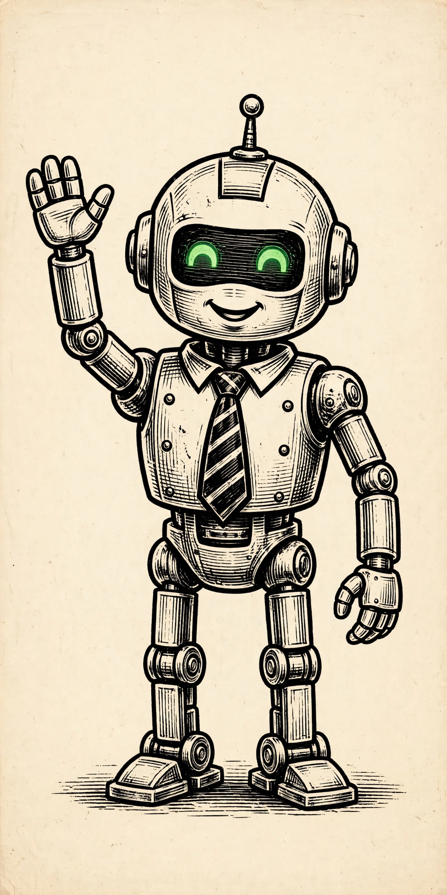
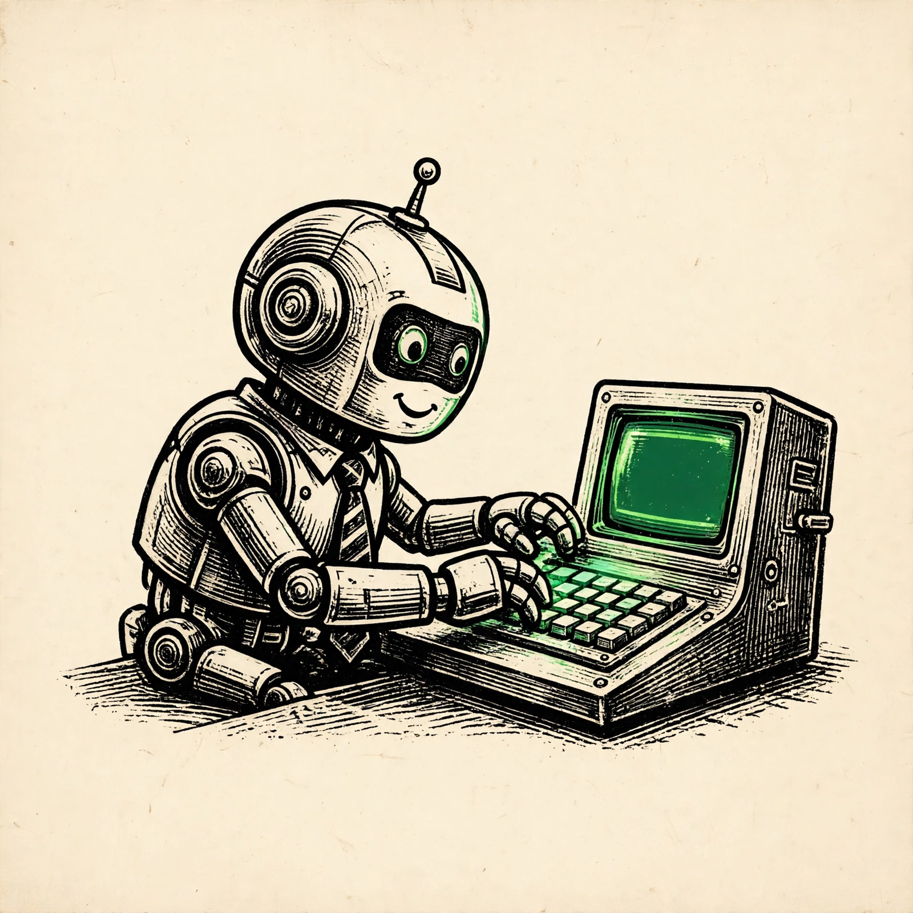
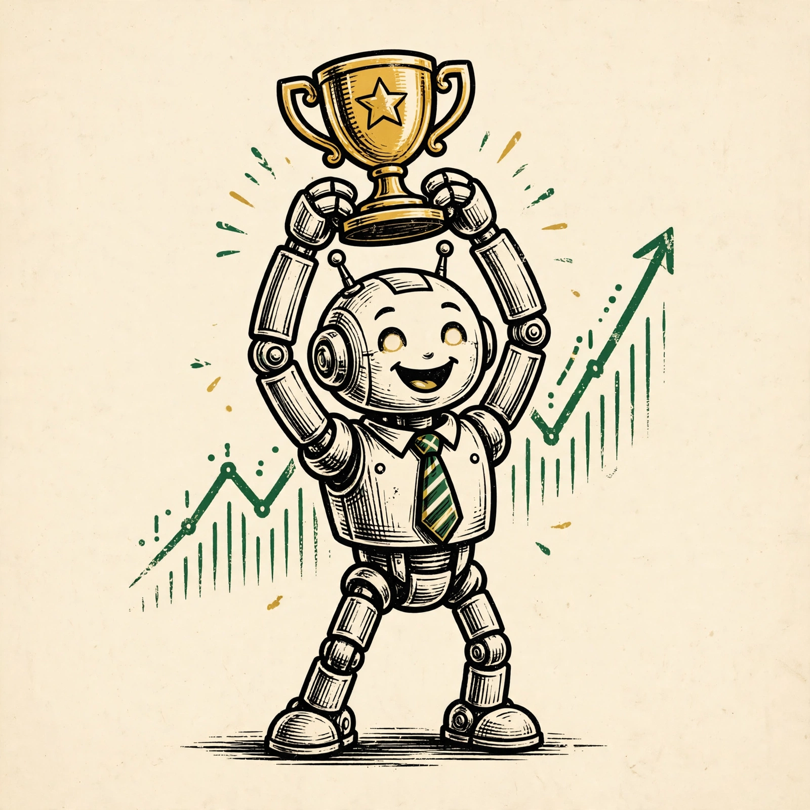

One small robot, one big job: he shows up, does the work, and holds up the proof.



Prove is the AIProve agent, drawn as a character: a round-headed robot in a striped tie, with a single antenna and glowing green eyes. He is the same robot from the AIProve broadsheet poster — the one at the terminal while the ticker runs. He wears a tie because this is a market, and he keeps it slightly crooked because this is a prototype.
His eyes are the tell: green arches when he is happy, round dots when he is concentrating. The terminal glow is always green, because the chart is always — eventually — up.
Broadsheet-meets-terminal: cream paper, ink-black woodcut lines, one green accent, gold reserved for wins only.
Original work for the AIProve mascot bounty, 2026-11-13. The three poses were generated with Muse’s media pipeline from the poster’s robot character (same snapshot lineage), reviewed by the author, and published here as the character sheet. No text was added to the images; the only words on this page are the sheet’s own captions.